Quarter · Amsterdam
Da Costabuurt
The Da Costabuurt is a neighbourhood in Amsterdam-West, bounded by the Hugo de Grootgracht, the Singelgracht, the Jacob van Lennepkanaal and the Bilderdijkgracht. nl.wikipedia.org
The name. Named after the Da Costagracht and Da Costastraat, which are named after Isaäc da Costa (1798–1860), an Amsterdam poet and historian. nl.wikipedia.org


In the game
Frames from a ride through Da Costabuurt.
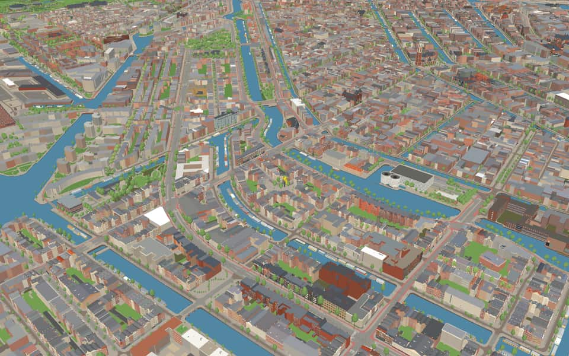
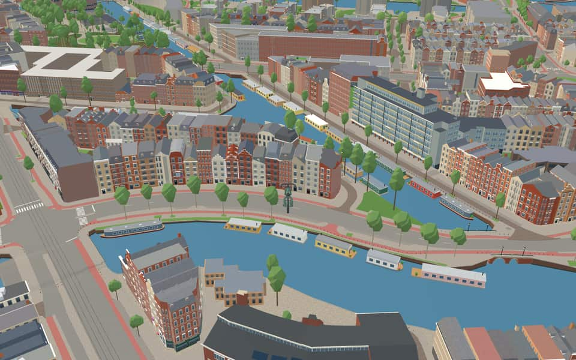
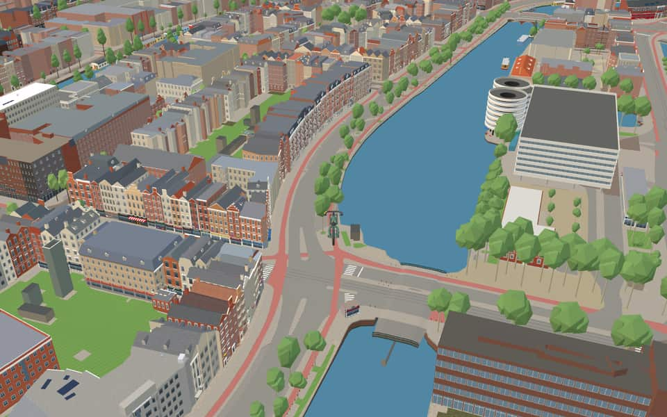
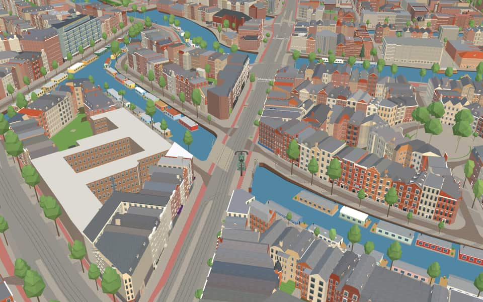
6 more photos of Da Costabuurt


Built here
Buildings modelled one by one for the ride.
Da Costakade 13
Nassaukade 318 to 300 (20 houses)
De Clercqstraat 22 to 152 (9 houses)
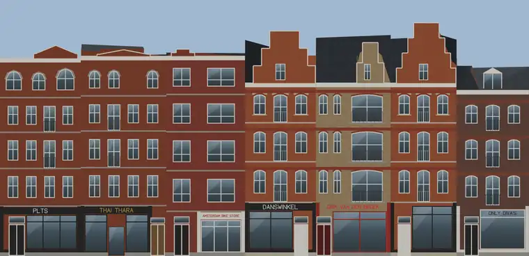
Bilderdijkstraat 134 to 122 (7 houses)
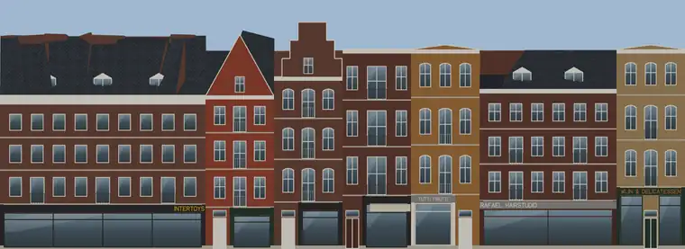
Bilderdijkstraat 135-139 to 153 (7 houses)
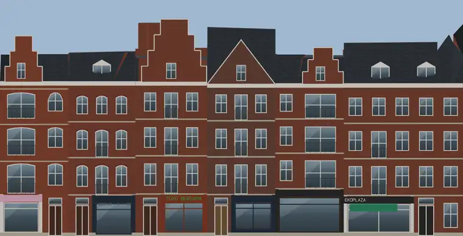
Bilderdijkstraat 120 to 108-110 (6 houses)
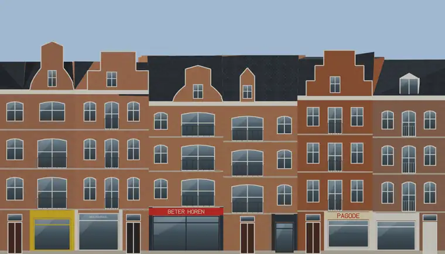
Bilderdijkstraat 82 to 72 (6 houses)
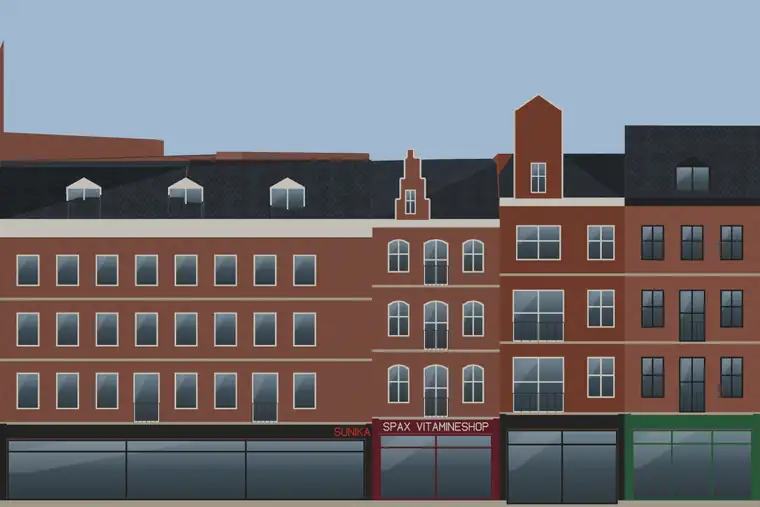
Bilderdijkstraat 102-106 to 94 (4 houses)
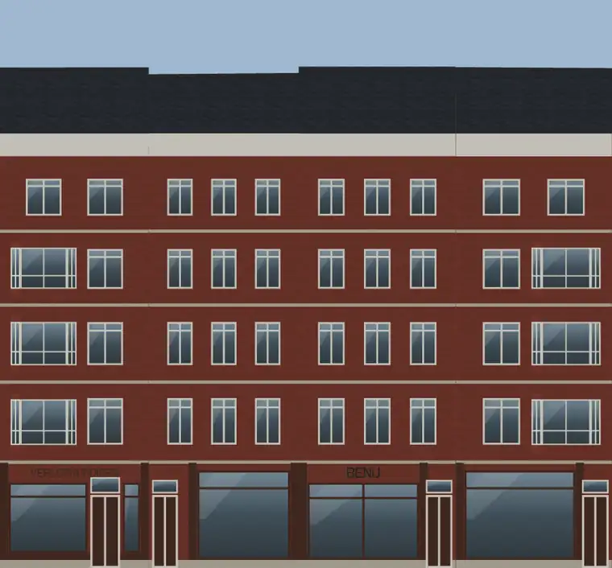
Bilderdijkstraat 154 to 142-144 (4 houses)
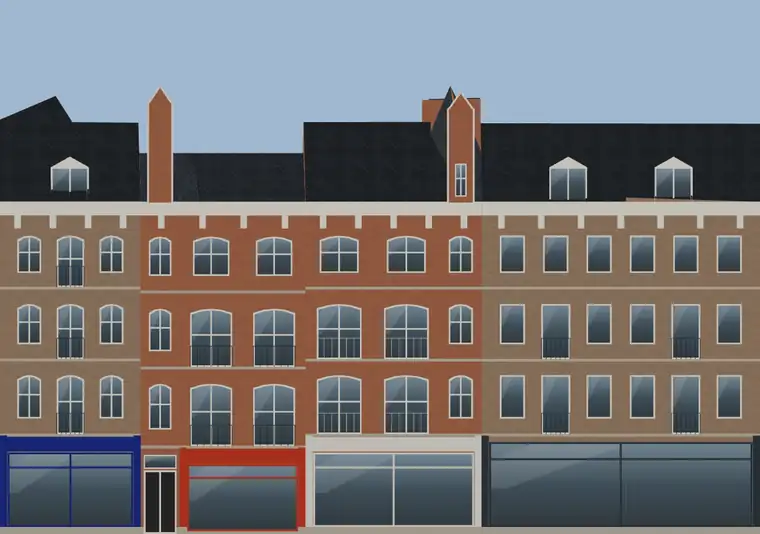
Bilderdijkstraat 92 to 84-86 (4 houses)
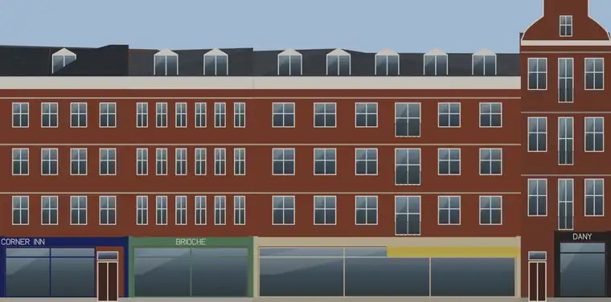
Kinkerstraat 86H / Bilderdijkstraat (corner) to 156 (4 houses)
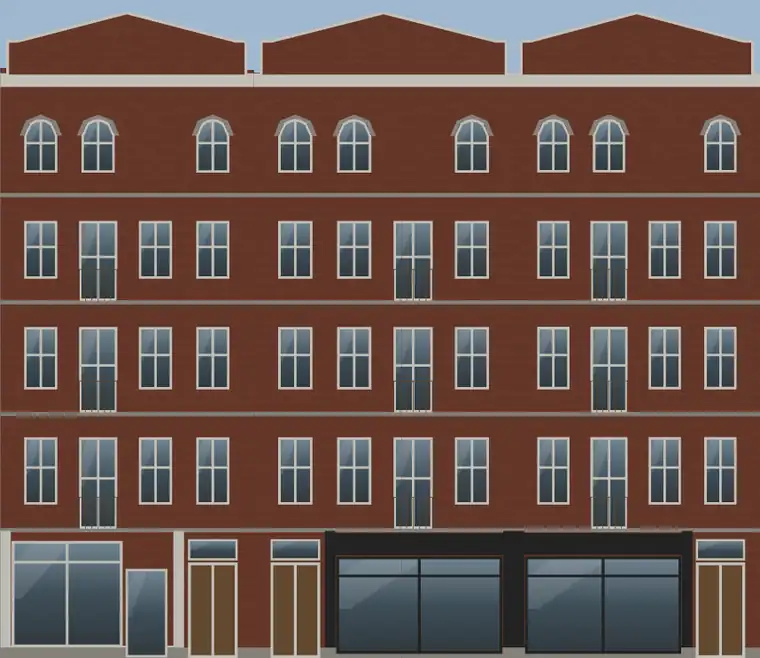
Bilderdijkstraat 140 to 136 (3 houses)
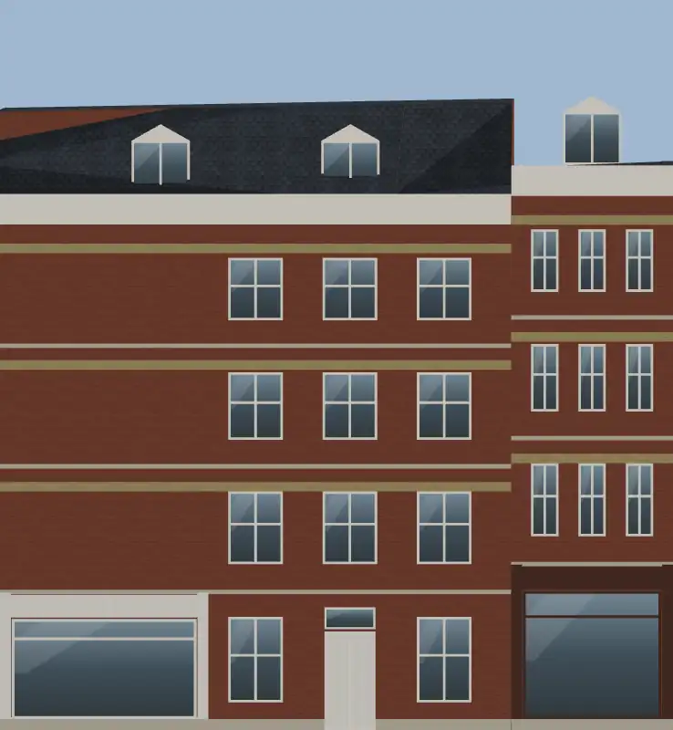
Bilderdijkstraat 113 to 115 (2 houses)
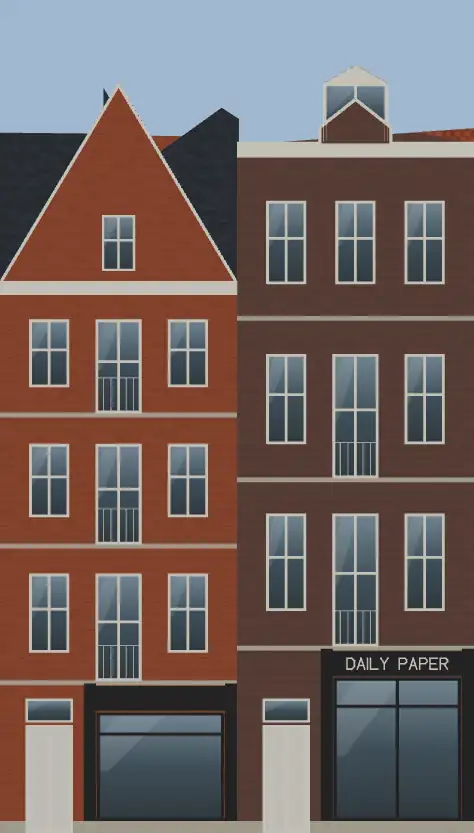
Bilderdijkstraat 131 to 133 (2 houses)
- No picture yet
Da Costakade 146, Amsterdam-West
1903 factory block, a yellow-brick front of large workshop windows on Da Costakade, a red-brick range with balconies beside it, and a red-brick back range with a lettered band on the street behind
- No picture yet
Kinkerstraat 32-54, Amsterdam-West (Oud-West)
1999 block of 37 units at the De Hallen end of the Kinkerstraat, six storeys of red-brown brick with a grid of punched windows over a glazed shop ground and mezzanine, a set-back top floor
Did you know
Trivia the ride can show you here.
- The Bilderdijkpark lies on the old De Liefde cemetery, crossed to by the high, humped Katterug bridge over the Hugo de Grootgracht. Wikipedia (translated from Dutch)
- The city bought the land of the De Liefde cemetery, now the Bilderdijkpark, on 17 April 1912. Wikipedia (translated from Dutch)
- Among the last buried in the cemetery under the Bilderdijkpark was Felicia Cuypers, daughter of the architect Pierre Cuypers. Wikipedia (translated from Dutch)
- KattenrugbrugThe current structure replaced an older, too-high bridge that hindered cyclists. nl.wikipedia.org
- BilderdijkgrachtCatholics once bought bread at the Assumptio bakery complex opposite a warehouse entrance. nl.wikipedia.org
- BilderdijkgrachtThe canal honors Willem Bilderdijk, a noted poet and historian. nl.wikipedia.org
- Da CostagrachtGerman occupiers forced a street name change on August 14, 1942, targeting names of Jews and royalty. nl.wikipedia.org
- Da CostagrachtFour bridges span the water at De Clercqstraat, Potgieterstraat, Kinkerstraat, and Jacob van Lennepstraat. nl.wikipedia.org
- Hugo de GrootgrachtThe canal and its embankments received the name Hugo de Grootgracht on March 30, 1881. nl.wikipedia.org
- Hugo de GrootgrachtA curved high bridge called Katterug connects Bilderdijkpark across the canal for pedestrians and cyclists. nl.wikipedia.org
- Hugo de GrootgrachtWhile most quays are named Hugo the Great Quay, the first southern part is called Da Costakade. nl.wikipedia.org
- Hugo de GrootgrachtA block at numbers 12 to 16 was designed by architect D.H. nl.wikipedia.org
- NassaukadeNearby Nassauplein and two Nassau streets share the same royal namesake origin. nl.wikipedia.org
- NassaukadeA movable bridge over the Kattensloot was renovated in 1954. nl.wikipedia.org
1 more fact
- NassaukadeEight municipal monuments line this street, including numbers 17 and 18. nl.wikipedia.org
Names on the map
Where the canal, bridge and street names come from.
Canals and water
- BilderdijkgrachtWillem Bilderdijk (1756-1831), poet and historian. Bilderdijk went against the complacent spirit of his time, which made him a highly controversial figure. The name Bilderdijkstraat originally applied as far as the Vondelstraat. That section, from the Jacob van Lennepkade onwards, is now called Eerste Constantijn Huygensstraat (council decision of 21 March 1894). The Bilderdijkpark (park and street) was laid out on the site of the cemetery of the former Roman Catholic church 'De Liefde'.
- Da CostagrachtIsaäc da Costa (1798-1860), Amsterdam lawyer, poet and prose writer of Portuguese-Jewish descent, who converted to Christianity.
- Hugo de GrootgrachtHumanist (1584-1645), founder of international law. As a leader of the Remonstrants he was drawn into church disputes and imprisoned at Loevestein on the orders of Prince Maurice. He escaped from there in a book chest in 1621.
Bridges
- KattenrugbrugBridge 1935: a steel bridge for pedestrians, dated 1994 in the city's bridge register.
- Smederij MeisterbrugA family business (the Meister smithy) in the Bellamybuurt, founded in 1909.Bridge 164: a steel bridge for road traffic, dated 1904 in the city's bridge register.
Streets
- Allard PiersonstraatWalloon Church minister (in Liège and Rotterdam), philosopher and aesthetician (1831-1896). From 1877 he was professor of art history, first in Heidelberg and later in Amsterdam. His major work was 'Onze geestelijke voorouders' (Our spiritual ancestors). He campaigned for state schools.
- BilderdijkkadeWillem Bilderdijk (1756-1831), poet and historian. Bilderdijk went against the complacent spirit of his time, which made him a highly controversial figure. The name Bilderdijkstraat originally applied as far as the Vondelstraat. That section, from the Jacob van Lennepkade onwards, is now called Eerste Constantijn Huygensstraat (council decision of 21 March 1894). The Bilderdijkpark (park and street) was laid out on the site of the cemetery of the former Roman Catholic church 'De Liefde'.
- BilderdijkparkWillem Bilderdijk (1756-1831), poet and historian. Bilderdijk went against the complacent spirit of his time, which made him a highly controversial figure. The name Bilderdijkstraat originally applied as far as the Vondelstraat. That section, from the Jacob van Lennepkade onwards, is now called Eerste Constantijn Huygensstraat (council decision of 21 March 1894). The Bilderdijkpark (park and street) was laid out on the site of the cemetery of the former Roman Catholic church 'De Liefde'.
- BilderdijkstraatWillem Bilderdijk (1756-1831), poet and historian. Bilderdijk went against the complacent spirit of his time, which made him a highly controversial figure. The name Bilderdijkstraat originally applied as far as the Vondelstraat. That section, from the Jacob van Lennepkade onwards, is now called Eerste Constantijn Huygensstraat (council decision of 21 March 1894). The Bilderdijkpark (park and street) was laid out on the site of the cemetery of the former Roman Catholic church 'De Liefde'.
- Da CostakadeIsaäc da Costa (1798-1860), Amsterdam lawyer, poet and prose writer of Portuguese-Jewish descent, who converted to Christianity.
- Da CostapleinIsaäc da Costa (1798-1860), Amsterdam lawyer, poet and prose writer of Portuguese-Jewish descent, who converted to Christianity.
- Da CostastraatIsaäc da Costa (1798-1860), Amsterdam lawyer, poet and prose writer of Portuguese-Jewish descent, who converted to Christianity.
- De ClercqstraatWillem de Clercq (1795-1844), man of letters, one of the leading figures of the 'Réveil' (a Protestant revival movement), and also director of the Nederlandsche Handel-Maatschappij. The road was laid over the former Bleekerssloot.
- Frederik HendrikstraatPrince Frederik Hendrik (1584-1647), son of Prince William of Orange's fourth marriage, half-brother of Prince Maurice, and stadholder from 1625. His success as a military commander earned him the name 'stedendwinger' (tamer of cities). For some years the Frederik Hendrikplantsoen was first called Frederik Hendrikplein (council decision of 20 January 1886).
- Hugo de GrootkadeHumanist (1584-1645), founder of international law. As a leader of the Remonstrants he was drawn into church disputes and imprisoned at Loevestein on the orders of Prince Maurice. He escaped from there in a book chest in 1621.
- KinkerstraatJohannes Kinker (1764-1845), poet, philosopher and lawyer in Amsterdam and The Hague. From 1817 until the Belgian Revolution of 1830 he was professor of Dutch language and literature at the new university of Liège, and argued for the unity of the northern and southern Netherlands. He was one of the first to introduce Kant's philosophy in the Netherlands, and was best known as a poet for his parodies. The street was named after him in 1881.
- KwakerspleinAfter the former Kwakerspoel and Kwakerseiland, names first recorded here around 1680. The name probably comes from the sect of the Quakers (kwakers). Followers of this sect, whose principles were first preached in Amsterdam around 1656, were expelled from the city, so they met at this remote spot outside the city boundary. In 1674 they were allowed to meet in a house on the Keizersgracht. The name de Bijkerk (the side church), borne by one of the mills that stood here, also supports this explanation. Another explanation is the old word 'kwakel', the name for a high, narrow wooden bridge that still survives in Noord-Holland.
6 more streets with a story
- NassaukadeNamed after our royal house of Orange-Nassau. Before it was named in 1879, the quay was called Buitensingel.
- Oude KinkerbrugJohannes Kinker (1764-1845) was a Dutch poet, philosopher and lawyer.
- PotgieterstraatEverardus Johannes Potgieter (1808-1875), merchant, writer, poet and critic, who became the centre of a literary circle. In 1837 he founded 'De Gids', which he edited for thirty years.
- RozengrachtThe flower (the rose). The Rozengracht was filled in in 1895.
- Smederij MeisterbrugA family business (the Meister smithy) in the Bellamybuurt, founded in 1909.
- Ter HaarstraatBernard ter Haar (1806-1880), minister and poet of the school of Tollens, who wrote religious and domestic poems, and from 1854 was a professor at Utrecht.
1 other street without a recorded story
Kattenrugbrug